Savvy Security LLC
The Church That Went Underground
Eighteen centuries of Christian operational security — the codes, the stones, the hiding places, and the one lesson the modern surveillance state has already made obsolete.
Twelve parts · thirty-five sections · a long read, best taken in pieces
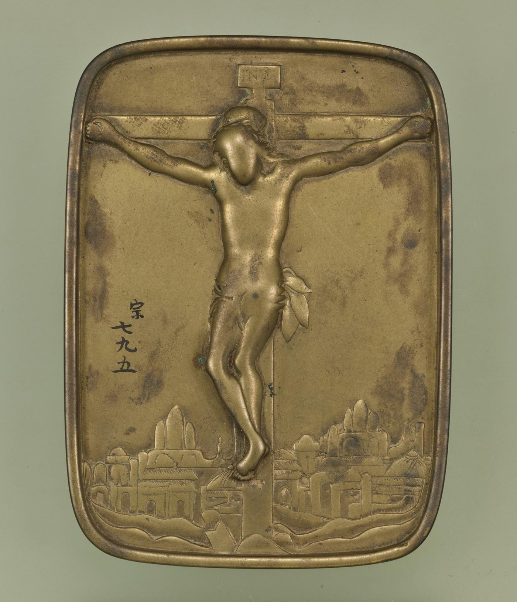
Somewhere in a village in Kyushu, in the early 1700s, officials arrive and assemble the population in the road.
They set down a small bronze plaque. Cast into it is the face of Christ, or of the Virgin holding her child. One by one, every man, woman, and child in the village is required to step on it.
This is the fumie, the “stepping-on picture,” and it is one of the most effective instruments of religious detection ever devised. It cannot be defeated by a clever answer, because it does not ask a question. It cannot be defeated by a forged document, because it does not check papers. It measures something a person cannot easily control: the half-second of hesitation before the foot comes down. Those who refused, and those who merely faltered, were taken away. Refusal could mean being suspended head-down in a pit until you recanted or died.
The villagers stepped on the image. Then they walked home, and in the privacy of their houses, they said prayers of confession for what they had just done.
They kept doing this for two hundred and fifty years.
I spend my working life thinking about how information survives contact with a hostile adversary. I am also a Christian. For a long time those two facts sat in separate compartments, until I started reading the history of the persecuted church and realized I was reading, over and over, a set of case studies in operational security. Some brilliant. Some catastrophic. Almost all of them older than the field that would eventually give them names.
What follows is that history. It is not the version most of us grew up with, because a good deal of the version we grew up with turns out to be nineteenth-century romance rather than evidence. The real story is stranger, harder, and considerably more useful.
It is also longer than one sitting. Take it in pieces.
- Part I — First, Know Who Is Actually Hunting You
- Part II — Going Underground for Real
- Part III — The Symbol Layer
- Part IV — Hiding in Plain Sight
- Part V — Actual Cryptography
- Part VI — Meeting in Secret
- Part VII — Keeping the Data Alive
- Part VIII — What Nearly Killed Them Was Not Persecution
- Part IX — Taking the Cross
- Part X — Was Any of This Even Allowed?
- Part XI — Why None of the Old Tools Work Anymore
- Part XII — What They Chose to Protect
Part IFirst, Know Who Is Actually Hunting You
1.The most important sentence in this entire history
Every security decision descends from one question: what can the adversary actually do?
The early church's answer survives in a remarkable document. Around AD 110, Pliny the Younger, governor of Bithynia-Pontus, wrote to the Emperor Trajan for guidance. He admits he has never presided over a trial of Christians and does not know the procedure. Eighty years after the crucifixion, an experienced Roman governor has no playbook.
He describes what he has done. People were denounced to him. He asked them three times whether they were Christians and executed those who persisted. Then an anonymous document circulated naming many more, and things began to spiral. Some of those named denied ever having been Christians. Others admitted they had been but had stopped, some twenty-five years earlier.
Trajan's reply is the governing text. He approves the procedure, declines to issue any general rule, and adds the decisive instruction: Christians are not to be sought out. If denounced and proven, punish them. But anyone who denies being a Christian and proves it by worshipping the gods is to be pardoned, regardless of past suspicion.
Sit with what that means. The Roman state had no discovery program. No dragnet, no systematic search, no intelligence collection tasked against Christians. The trigger was a neighbour with a grudge. The exit was cheap and universally available. Trajan even ruled out anonymous accusations as a basis for prosecution. And because Roman governors operated with enormous personal discretion under cognitio extra ordinem, the threat level in any given province was largely a function of one man's temperament.
Now here is the part that surprised me most, and that reorganized how I read everything else.
Against that adversary, hiding is the wrong move.
Concealment is expensive. It cripples the thing the church existed to do, which was preach in public and grow. And furtiveness is exactly what makes neighbours suspicious, and neighbours were the entire attack surface. A congregation that behaved like a secret society would have increased its risk of the one thing that actually got people killed.
So the early church did something that looks, to modern eyes, like negligence, and was in fact a correct threat assessment. It stayed visible. It kept good relations with its neighbours. It occupied recognized social categories. It accepted that individual believers would occasionally be lost, and it designed for the survival of the network rather than the survival of the node.
The scholar Larry Hurtado, who spent a career on the earliest Christian manuscripts and material culture, put it bluntly: when Roman authorities wanted to arrest Christians, they found it easy enough, because Christians did not conceal who they were or where they could be found.
Which brings us to the catacombs.
2.The myth we all inherited
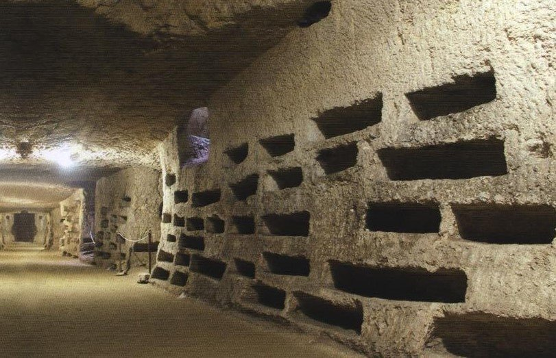
The picture is vivid and almost entirely wrong. Believers slipping through torchlit tunnels beneath Rome, celebrating a forbidden liturgy among the bones, sentries at the entrance.
The evidence does not support it. L. Michael White argues that Christians went into the catacombs the way their pagan neighbours did, to hold memorial meals with their dead. Catacomb burial was not distinctively Christian and was practised widely in Rome. Britannica states flatly that there is no substance to the belief in catacombs as secret meeting places, noting that conditions underground would have made regular assembly impractical. And the decisive point: the authorities knew perfectly well where the catacombs were. A hiding place whose location is on file is not a hiding place.
What survives scrutiny is real and worth keeping. The catacombs were burial sites, and places for funeral feasts and Eucharistic celebration connected with the martyrs and the dead. And during acute persecution, their intricate layouts and their connections to sand quarries and open country did provide usable refuge and escape routes.
That distinction matters more than it appears. A tunnel network with unregistered exits into open country is enormously valuable when soldiers are at the door. It is nearly useless for weekly worship. The catacombs were an emergency egress asset, not a covert operating environment, and confusing the two is the same error as treating your disaster-recovery site as production.
But hold that thought. Because a few hundred miles east, Christians built something that genuinely was a covert operating environment, and they built it deep.
Part IIGoing Underground for Real
3.Derinkuyu
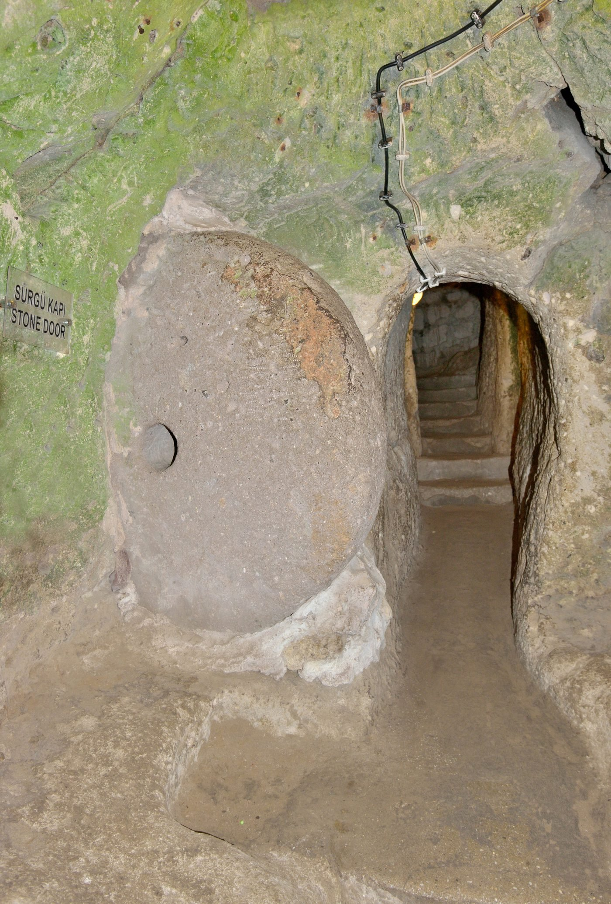
In 1963, a man in the Turkish town of Derinkuyu was renovating his house and knocked through a wall. Behind it was a room he had never seen. Behind that was a tunnel.
What he had opened was the largest excavated underground city in Turkey: eighteen levels descending roughly eighty-five metres, some two hundred and eighty feet, into soft volcanic tuff. It is estimated to have sheltered as many as twenty thousand people together with their livestock and food stores.
This is not a cave. It is a city, engineered for siege:
- Wine and oil presses, stables, cellars, storerooms, wells and cisterns, communal kitchens, dormitories. Food production and water independent of the surface.
- Fifty-two ventilation shafts carrying air to the deepest levels, with a stable interior temperature.
- Chapels and liturgical spaces on multiple levels, with vertical staircases connecting the third and fourth levels to a further church on the fifth.
- A large barrel-vaulted room believed to have served as a religious school.
- Rolling stone doors: massive discs with a small central hole, rolled across passages to seal them during a raid, operable only from the inside.
Look at that list again and notice what is missing from a bunker. Bunkers store people. Derinkuyu stored a civilization. The presses and the stables mean the community could feed itself indefinitely. The chapels mean it could worship. And the school means it could teach its children, which is the only thing that actually gets a faith across a generational boundary.
Whoever designed this understood that the goal was not to survive the raid. The goal was to still exist, recognizably, on the far side of it.
The rolling stone doors deserve their own note. They are an access control operable only from the defended side, and they work by forcing an attacker into single file through a chokepoint. A control that trades throughput for security. Every firewall administrator has made that trade.
4.Who was down there
The honest answer is: a lot of people, over a very long time, and the record is layered rather than tidy.
The excavation is generally credited in origin to the Phrygians, around the eighth to seventh centuries BC. Some accounts hold that early Christians fleeing Roman persecution in the second to fourth centuries expanded it, pointing to the chapels and to crosses carved into the walls. Others place the major expansion in the middle Byzantine period, as refuge from Umayyad and Abbasid raids during the Arab–Byzantine wars. The defensible statement is that Cappadocia's underground cities were long-lived, repeatedly reused refuge infrastructure whose Christian phases are unquestionably real, even where the earliest Christian dating is not securely established.
What is not in dispute is the long tail. After the region fell to the Ottomans, the local Christian population used these places as kataphygia, the Cappadocian Greek word for refuges, against periodic waves of persecution. And the Christians of Cappadocia were not one people. They included both Greeks and Armenians, and both communities used the underground refuges into the early twentieth century as they sought shelter from Ottoman oppression. Armenians are listed among the cultures associated with Derinkuyu, alongside the Phrygians, Byzantines, and Cappadocian Greeks.
And we have an eyewitness for how this worked, which is rare and precious.
Richard MacGillivray Dawkins, a Cambridge linguist, was in Cappadocia between 1909 and 1911 studying the Greek-speaking natives. He recorded that in 1909, when news arrived of the massacres at Adana, much of the population of the village of Axo took refuge in the underground chambers and would not sleep above ground for several nights.
Read that with the dates in mind. The Adana massacres of 1909 were the slaughter of Armenian Christians. The mechanism Dawkins describes is a Christian community receiving word that Christians elsewhere were being killed, and going underground within hours, into refuges their ancestors had been digging and maintaining for something like a thousand years. This is a threat-intelligence feed and an incident-response plan, running in a village with no electricity.
The last chapter is what gives it weight. Ottoman persecution of the empire's Christian populations intensified through the 1910s and culminated in the Armenian Genocide and the parallel destruction of Greek and Assyrian Christian communities. For the Armenians of Anatolia the refuges were not enough. A genocide is not a raid, and no amount of provisioning outlasts a state that intends your permanent erasure. The Cappadocian Greeks were compelled to leave in the 1923 population exchange. The tunnels were abandoned around 1924, sealed and forgotten, until a man knocked through his own wall thirty-nine years later.
There is something almost unbearable in the fact that Derinkuyu was rediscovered by accident. A refuge that had held a Christian population for centuries went dark not because an enemy found it but because there was no longer anyone above it who remembered the way in.
5.Lalibela: a replica of an unreachable site
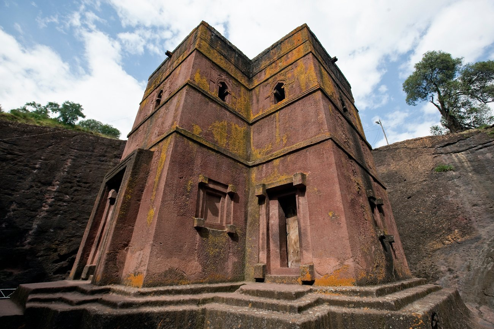
Eight hundred miles to the south, Ethiopian Christians solved a different problem with the same geology.
In the Ethiopian highlands, eleven medieval monolithic churches were carved from volcanic rock, attributed to King Gebre Mesqel Lalibela in the twelfth and thirteenth centuries and inscribed by UNESCO in 1978.
They were not built. They were excavated downward. Workers cut trenches into the bedrock and sculpted each church from the living stone, removing everything that was not church, an estimated 40,000 cubic metres of rock, including columns, arches, and drainage systems, with no added masonry. The churches fall into two clusters connected by subterranean passageways and carved wadis, one group ringed by a trench eleven metres deep.
The eleventh, Bete Giyorgis, the House of Saint George, stands alone. It is carved in the shape of a Greek cross, roughly fifteen metres tall, on a stepped platform inside a sunken courtyard. From ground level, only the roof is visible. From above, it becomes clear not only that the church is cross-shaped but that Greek crosses have been carved into its roof as well. It has three doors and twelve windows, each crowned by a cross and floral motif in relief, plus nine false windows carved into the exterior that do not open into the interior at all.
And the reason for the whole complex: it was conceived as a New Jerusalem in the Ethiopian highlands after Saladin's capture of Jerusalem in 1187 made pilgrimage to the Holy Land increasingly difficult. A rock-cut stream named the Jordan divides the site into earthly and heavenly Jerusalem, with churches positioned to recreate the sacred geography. It remains a living pilgrimage site, with daily Ethiopian Orthodox services eight centuries on.
This is a failover site for a sacred geography whose primary became unreachable. When access to Jerusalem was lost, a functional replica was constructed elsewhere with the topology preserved: named streets, a Jordan, the relative positions of the holy places. Not metaphor. Stated design intent.
Two details are worth an engineer's attention. The cross of Bete Giyorgis is invisible from the approach and legible only from above, a viewing-angle-dependent disclosure whose full form was available to a perspective almost nobody in the twelfth century could occupy. And the nine false windows are decoys: features that present as functional and open into nothing.
Set Lalibela beside Derinkuyu and the pattern is unmistakable. Both are subtractive architecture in volcanic rock. Both descend rather than rise. Both preserve worship and the transmission of worship. One was built to survive a raid. The other to survive the loss of a homeland.
Part IIIThe Symbol Layer
6.Why the cross is everywhere, and what that actually means
Before we get to Christian symbols, we have to deal with a fact that gets used badly in both directions.
The cross demonstrably predates Christianity and appears in cultures that never met.
This is not a hostile claim. The Catholic Encyclopedia concedes plainly that the sign of the cross, in its simplest form of two lines crossing at right angles, greatly antedates the introduction of Christianity in both East and West, going back to a very remote period of human civilization. The 1910 Britannica observed that owing to the simplicity of its form the cross has served as both religious symbol and ornament from the dawn of civilization.
The specifics:
The sun cross, an equilateral cross inside a circle, appears throughout prehistoric cultures, especially the European Neolithic through Bronze Age. Rock carvings at Madsebakke on Bornholm, Denmark, dating to roughly 1800–500 BCE, show multiple sun crosses with cup marks. Nineteenth-century scholarship read the cross-in-circle as the wheel of the sun god's chariot. The same figure is the Egyptian hieroglyph for village.
The chakana, the Andean cross, is a stepped cross with a central opening, carved in stone at Machu Picchu and Chan Chan and woven into textiles across the Andes. Its name comes from Quechua chaka, bridge or crossing. It is associated with the Southern Cross constellation and maps four cardinal directions onto the fourfold division of Tawantinsuyu, with Cusco at the centre. It belongs to an Andean tradition older than the Inca.
The Kongo cosmogram, dikenga or yowa, is a cross within a circle at the core of Kongo religion. It depicts the physical and spiritual worlds, the vertical line connecting them, the horizontal Kalûnga line, and the rotating sun. The rising, peaking, setting, and absence of the sun are the “four moments of the sun,” corresponding to four stages of life: conception, birth, maturity, death. The meeting point of the two lines is the most powerful point, and it is where the person stands.
The swastika appears in the Ukrainian Palaeolithic, Bronze Age Iraq, India, and Hopi Arizona, usually with solar or auspicious associations.
The scholarly answer, and why it is better than the alternative
The mainstream explanation is independent invention, and the reasoning is not a shrug.
The anthropologist Clark Wissler argued that similar geometric designs, including swastikas, could arise among peoples without contact because there is a limited set of geometric solutions to decorating a surface. Mainstream archaeologists favour independent development unless evidence of contact is incontrovertible, and independent origin remains a strong null hypothesis requiring hard proof to displace.
Look at the four cases and the convergence explains itself. The sun's daily arc and annual path divide the horizon into four cardinal points marked by solstices and equinoxes: a central disk intersected by equidistant arms. The chakana encodes four directions. The dikenga encodes four moments of the sun. The sun cross encodes the solar wheel. These are not one symbol travelling. They are four independent encodings of the same observation, made by people who all lived under the same sky and all noticed that it has four quarters and a centre.
The alternative theory has a name and a record. Hyperdiffusionism held that virtually all major cultural innovations came from a single ancient source, usually Egypt, and spread by diffusion. It was promoted in the early twentieth century by the anatomist Grafton Elliot Smith, who attributed pyramids, mummification, megaliths, and even maize cultivation in the Americas to Egyptian mariners. It drew immediate rebuttal and was obsolete by mid-century. The objections are the ones to apply to any similar claim: no empirical support, reliance on coincidental similarity over material evidence, failure to allow for independent invention, and divergent technique under superficial resemblance. Egyptian pyramids use stepped cores with casing; Mesoamerican ones use talud-tablero platforms without ramps. Same silhouette, different engineering. Independent invention is demonstrable elsewhere: agriculture arose separately in the Americas with entirely different crops. And Alice Kehoe has criticized the whole school as a grossly racist ideology that underrates the capacity of non-European societies for innovation.
That last point deserves emphasis. The claim that the chakana or the dikenga must derive from an Old World source is not a neutral hypothesis. It carries an assumption about who is capable of inventing things.
The security framing
Here is why this section belongs in an article about operational security rather than in a footnote.
The cross is a low-entropy token. Two strokes. The space of distinguishable two-stroke figures a human can draw, remember, and reproduce is very small. When many independent populations sample from a very small space, collisions are not surprising. They are the expected outcome. Finding the same two-stroke figure in Denmark, Peru, and the Congo is about as evidentiary as finding the same four-digit PIN in two unrelated databases.
And this is the setup for everything that follows. Low entropy is fatal for a key and ideal for a cover. A symbol common enough to appear independently everywhere is a symbol that raises no anomaly when it appears. Keep that in mind for the next three sections, because it is the whole reason the early Christian symbol set worked.
7.The cross that wasn't there
Here is a fact about the pre-Constantinian church that surprises most Christians.
They did not display the cross.
The material record notes “the almost total absence from Christian monuments of the period of persecutions of the plain, unadorned cross,” except in disguised form. During this period the cross is seldom seen except disguised as an anchor, a trident, or a ship's mast. One catacomb image shows two fish with what appears to be a trident, probably a disguise for the cross.
What they displayed instead was a vocabulary. Christian symbols are first mentioned in writing by Clement of Alexandria around AD 200, in Paedagogus 3.11, where he advises on suitable imagery for seal rings. The material record from before 313 is consistent:
- The Good Shepherd, a beardless youth carrying a lamb, the most common of the images, borrowed directly from the classical criophorus or ram-bearer and probably not understood as a portrait of the historical Jesus.
- The Orant, a figure standing with arms raised, symbolizing the soul at peace, frequent near burials.
- The anchor, hope and steadfastness, from Hebrews 6:19. Its vertical shaft and crossbar closely resemble a cross, allowing a cross-like shape to be displayed without detection.
- The dove, often with an olive branch: the Holy Spirit, peace.
- The peacock and the phoenix, immortality and resurrection, the peacock resting on the ancient belief that its flesh did not decay.
- Jonah, Daniel in the lions' den, Orpheus charming the animals: narrative types for death and deliverance.
- The Chi-Rho, the monogram of Christ, present in the catacombs before it was ever imperial.
Two things stand out. The bare cross is missing. And most of the vocabulary was borrowed: the Good Shepherd, the peacock, the phoenix, and the vine came from Greco-Roman motifs and were given new meanings. The Good Shepherd's familiar classical look concealed its Christian meaning. The fish was the exception, not borrowed.
A caution is required here, and it is the same one that applies to the catacombs. Popular sources routinely assert that these symbols existed so believers could recognize each other while outsiders stayed ignorant. Hurtado, White, and Graydon Snyder are all skeptical of the broader “secretive early Christianity” picture, and that skepticism applies here too. What the evidence supports without controversy is the material fact: the pre-313 vocabulary is dominated by borrowed, ambiguous, dual-readable motifs, and the bare cross is largely absent until after legalization. Whether an individual believer chose an anchor to evade detection or simply because the anchor was the conventional motif is not recoverable from a tomb slab.
But the system has a clear property regardless of individual motive. The pre-Constantinian symbol set was optimized for deniability, and it changed the moment deniability stopped being necessary. The bare cross appears when the threat disappears. That correlation is the strongest available evidence that the earlier ambiguity was doing work.
8.The fish, honestly
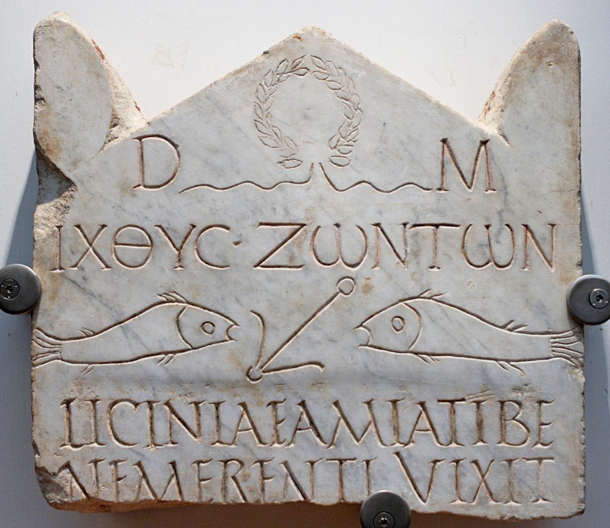
The Greek word ΙΧΘΥΣ means “fish,” and its five letters form an acrostic: Iēsous Christos, Theou Huios, Sōtēr — Jesus Christ, Son of God, Saviour. It appears in Christian art and literature from the second century, becomes common by the late second, and spreads widely in the third and fourth. Clement of Alexandria advised Christians on seal-ring imagery including fish and doves. Augustine spells the acrostic out in full in The City of God, by which point it had long been standard teaching. The symbol turns up in the Catacombs of Saint Sebastian and Priscilla.
All of that is solid.
The part everyone remembers, the traveller who scratches one arc in the dust and waits for a stranger to complete the second, is not. That story rests on an argument from silence, and more recent scholarship has doubted it.
Here is the thing: the real explanation is better than the legend. The fish was in wide pagan use long before Christians took it up. It carried no distinctive marking. A believer could wear it, carve it, or set it on a tomb without anyone finding it remarkable. Unlike the cross, the fish attracted little suspicion.
That is not a cipher. It is low-observable in-group signalling: a token semantically dense to insiders and unremarkable to everyone else. Its security property is not that outsiders cannot read it. Its security property is that nothing about it looks like an attempt at concealment.
And notice how gracefully it degrades. If an outsider learns what the fish means, the symbol is not compromised, because it was never carrying a secret. It carried an identity. Compare that with a code word, which is worthless the moment it is broken. The fish was still doing its job in the fourth century, two hundred years after Clement wrote the meaning down in a book anyone could buy.
This is the low-entropy principle from the previous section, working exactly as designed.
9.The stone that says who you are
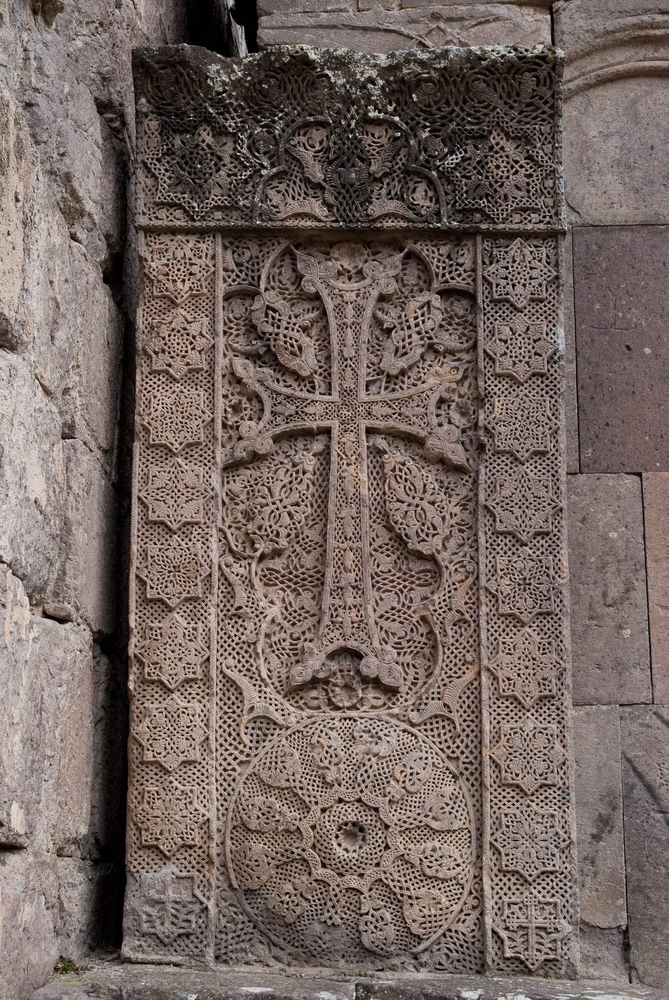
Not every Christian symbol was designed to be ambiguous. Some were designed to be unmistakable, and that is a different security posture with a different failure mode.
A khachkar is a carved memorial stele bearing a cross, from the Armenian khach (cross) and kar (stone). Standard examples run 1.5 to 2 metres tall, carved from Armenian volcanic tuff. The earliest dated example is from 879 CE, with the classical tradition running from the ninth through thirteenth centuries. Roughly 50,000 stand in Armenia alone, with examples in more than sixty countries. In 2010 UNESCO inscribed “Armenian cross-stones art: symbolism and craftsmanship of khachkars” on the Representative List of Intangible Cultural Heritage.
They served as grave markers, as commemorations of victories or the completion of a church, and as petitions for protection from natural disaster. The cross signifies Christ's sacrifice and resurrection, and it is also apotropaic, a guard against malevolent forces.
The iconography is layered. Alongside the cross come rosettes, interlaces, and botanical motifs. The Armenian eternity symbol, an interlocking chain pattern, is among the most distinctive elements, and it predates Christianity in Armenia, appearing in pre-Christian Armenian art. The khachkar tradition absorbed older forms into a new religious context, growing more complex century by century. The Goshavank khachkar, carved in 1291 by the master Poghos, carries an exceptionally long inscription recording its donors, which makes it a documentary source on medieval Armenian social and economic life as well as an artwork.
For a security audience, four properties:
It is a distributed identity assertion. Not one monument but fifty thousand, spread across a landscape and a diaspora. There is no single instance whose destruction removes the claim.
It carries provenance metadata in-band. Inscriptions name donors, occasions, dates. The Goshavank stone is, functionally, a signed record attached to the artifact.
The craft, not the object, is the unit of preservation. UNESCO inscribed the craftsmanship, and the committee's stated rationale was that the symbolism and craftsmanship are transmitted from generation to generation and continuously recreated. A tradition where masters still train apprentices can regenerate lost stones. That is the difference between backing up files and preserving the ability to rebuild the system.
It is deliberately non-covert. Unlike everything else in this article, the khachkar hides nothing. It is a large stone object in the open air announcing exactly who put it there.
Which brings the corresponding vulnerability.
10.Djulfa: when the adversary attacks the symbol layer
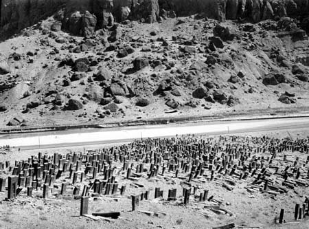
Old Jugha, known in Azerbaijani as Djulfa, in the Nakhchivan exclave near the Iranian border, held what is recorded as the world's largest collection of khachkars. Over 10,000, based on the testimony of the seventeenth-century traveller Alexander Rhodes.
The destruction was phased. Construction of a railroad in the late nineteenth century destroyed thousands of the fifteenth- and sixteenth-century stones. Over 1,000 more were purged in 1998 and 2002. Then, in December 2005, an Iranian border patrol alerted the Prelate of Northern Iran's Armenian Church that the cemetery was under attack. Bishop Nshan Topouzian and his driver filmed from across the Araxes as more than 100 Azerbaijani soldiers with sledgehammers, dump trucks, and cranes destroyed the remaining 2,000 khachkars. The bishop conducted a memorial service on the Iranian bank while the destruction continued across the river.
Azerbaijan denied it. In 1998 it dismissed the claims outright. Officials later maintained not merely that the site had not been disturbed but that it had never existed, and that Nakhchivan was never Armenian. The European Parliament sought a fact-finding mission and was denied entry. A US ambassador was likewise refused access.
This is where it becomes a case study in forensics.
Because on-site investigation was barred, the American Association for the Advancement of Science, through its Geospatial Technologies and Human Rights Project, turned to satellite imagery. Analysts compared a September 2003 QuickBird image against one from May 2009. The 2003 image shows rocky, uneven terrain and, critically, the shadows cast by the khachkars themselves. The 2009 image shows a flat landscape, new dirt roads traversing the site, and no shadows. AAAS concluded the evidence was consistent with ground observers' reports of destruction and levelling by earth-moving equipment. A 1982 KH-9 Hexagon image shows the intact cemetery as a distinctive stippled surface. The team located the site using a map hand-drawn from local knowledge, and Cornell's Adam Smith has noted that geolocation is the hardest methodological problem in this kind of heritage forensics.
Four observations transfer directly to anyone doing detection work.
Shadow as signal. The analysts did not detect the stones. They detected the shadows the stones cast, then the absence of those shadows. When you cannot observe the asset, observe its effects. This is side-channel analysis applied to cultural heritage.
Denial of access is itself evidence. Barring the European Parliament and a US ambassador is a behaviour, and behaviours are observable even when facts are not.
Attacking the symbol layer is a recognized strategy. An adversary who cannot reach a population can still attack the artifacts anchoring its claim to a place.
Phased destruction defeats naive monitoring. Three waves across seven years, each individually deniable. Anyone who has hunted slow exfiltration rather than a single large transfer knows the shape.
11.The credential you cannot confiscate
Set against the khachkar, which is a large permanent object, is the oldest Christian identity marker of all, and the one with the opposite properties.
This is open doctrine, published and free to read. The Catechism of the Catholic Church §1667 defines sacramentals as sacred signs bearing a resemblance to the sacraments. The sign of the cross is treated not as merely symbolic but as an efficacious sign. The Catechism calls it the characteristic mark of the baptized (§1235) and grounds it in the most ancient layer of tradition as the primary gesture of Christian self-identification (§2157).
The historical depth is documented. Tertullian, writing around 200–204 in De Corona chapter 3, describes the practice with a casualness indicating an already established custom: at every forward step and movement, at every going in and out, when putting on clothes and shoes, when bathing, at table, when lighting the lamps, on couch, on seat, in all the ordinary actions of daily life, Christians trace the sign on the forehead. Basil said the Apostles taught the marking of those who put their hope in the Lord. Cyprian testified to it as a witness of faith. The gesture was initially made with the thumb on the forehead. In the thirteenth century Innocent III directed the three-fingered form from forehead to breast and right shoulder to left; by the fourteenth the Western form had inverted.
The scriptural frame is the seal. Ezekiel 9:4 has the Lord commanding a mark on the foreheads of those who grieve over the abominations of Jerusalem. Revelation 7:3 has the servants of God sealed on their foreheads before harm comes.
This is a bodyborne, gestural credential with no artifact.
- It requires no object, so there is nothing to find, no possession offence, no seizure.
- It leaves no residue. Performance and erasure are the same event.
- It can be made invisibly, on the breast or in the mind.
- It is verifiable by any Christian and needs no issuing authority beyond baptism.
- It cannot be revoked or confiscated. Only refused.
Now set it against the fumie from the opening of this article and the symmetry is exact. The fumie was a compelled physical act designed to force the body to betray the conscience. The sign of the cross is a voluntary physical act by which the conscience claims the body. Both regimes understood the same thing: when documents and objects can be seized, the body becomes the last available medium.
Part IVHiding in Plain Sight
Going underground is the dramatic option. It is also the rare one. The technique that carried the faith through the longest and hardest suppressions was subtler and far more counterintuitive.
Don't hide. Look like something the adversary already tolerates.
12.Maria Kannon
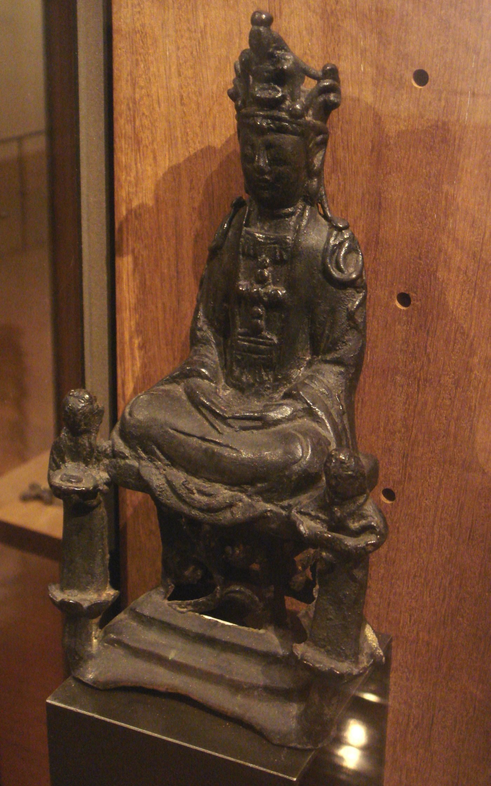
Return to the Japanese village and the fumie.
Christianity was banned in Japan in 1614. The Jesuit mission had made something like three hundred thousand converts. Now the entire structure was outlawed, the clergy expelled or killed, and the population placed under recurring compulsory testing.
The communities that survived are the Kakure Kirishitan, the Hidden Christians. They did not go into caves. They went into the local temple.
They presented publicly as devotees of Buddhism, participating fully in the visible religious life of their villages while remaining a coherent group underneath. And at the back of their household Buddhist altars, they placed statues of Kannon, the bodhisattva of mercy, who in China and Japan had taken on a compassionate feminine form, frequently depicted holding a child.
Later observers named these figures Maria Kannon. The Hidden Christians themselves did not use that name, which is itself good practice: a name is an artifact, and artifacts leak.
I want to be precise about why this worked, because it is the deepest single idea in this history.
This is not encryption. Nothing is scrambled. It is not a cipher, a code, or a puzzle. It is steganography in the strict sense, a covert payload carried inside a genuine, legitimate object of the host culture. An inspector who opens the household shrine finds a household shrine. There is no anomaly to detect, no residue of concealment, nothing that says something has been hidden here. The cover is not a disguise draped over the truth. The cover is real.
Compare encryption, which announces itself. Ciphertext says: here is a secret, and someone went to trouble over it. In a village under recurring inspection, that announcement is the whole danger. The Hidden Christians solved the problem by never generating the signal.
13.The cross on the lotus
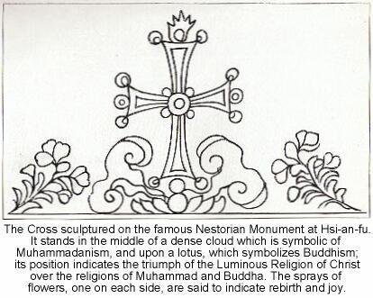
The same operation, done openly, nine hundred years earlier and in the opposite direction.
The Nestorian Stele, properly the Monument Commemorating the Propagation of the Luminous Religion in the Middle Kingdom, is a limestone block 279 cm tall, erected in the imperial capital of Chang'an, modern Xi'an, on 7 January 781. Its text, composed by the monk Jingjing (Adam in Syriac) with calligraphy by Lü Xiuyan, runs 1,756 Chinese characters plus about seventy words of Syriac. It records that the Church of the East arrived under the missionary Alopen and received recognition from Emperor Taizong in 635.
At the top of the tablet, among swirling clouds, is a cross resting on a lotus flower, an adaptation of Buddhist iconography in which the lotus pedestal is the seat of the gods.
Then it disappears. The stele is thought to have been buried around 845, during the anti-Buddhist persecution that also swept up Christians, Zoroastrians, and others. Chinese writings on stone and metal monuments as far back as 1064 do not mention it, so the burial is placed between 781 and 1064. It stayed buried until it was unearthed near Xi'an between roughly 1623 and 1625.
The recovery details are extraordinary. After nearly eight centuries underground it came up in near-perfect condition. News of the find reached Hangzhou, where many Jesuits and Chinese Christians were hiding after recent persecutions. A Jesuit, likely Nicholas Trigault, translated the inscription into Latin; French and Italian followed; Edward Gibbon and Athanasius Kircher eventually wrote about it. The stele now stands in the Forest of Steles Museum in Xi'an.
This artifact does three jobs at once.
Symbolic inculturation, performed publicly. A cross seated on a lotus among Chinese cloud motifs, with Syriac alongside Chinese, is deliberate local encoding of a foreign payload. The same operation as Maria Kannon, run by a confident community rather than a hunted one.
Offline cold storage. Facing active persecution, the community took its most important monument off-line, literally underground, where it could not be seized, defaced, or reinterpreted. The medium was chosen for durability, not accessibility.
The archival trade-off at full scale. It survived because it was inaccessible, and it was inaccessible for eight hundred years. Nobody read it. Nobody was edified by it. The community that buried it died out. Then it came back intact and reshaped Western understanding of Christian history in Asia. Availability and durability are in tension, and 781 made the right call — but only because someone eventually dug.
14.Gregory's instruction
The most striking thing about this technique is that at one point the Church wrote it down as policy.
In 601, Pope Gregory the Great wrote to Abbot Mellitus, then on his way to join Augustine of Canterbury in Britain. The letter survives in Gregory's Register (11.56) and was later incorporated by Bede into the Ecclesiastical History. It has been in print for thirteen centuries.
Gregory instructs that the temples of the idols should not be destroyed, only the idols inside them. Water is to be blessed and sprinkled in the temples, altars constructed, relics deposited. If the temples are well built, they should be converted from the worship of demons to the service of the true God. The reasoning is explicit: when the people see their temples are not being destroyed, they may put error from their hearts and, knowing the true God, resort more freely and familiarly to the places they are accustomed to. Since they are used to killing many oxen in sacrifice, they should be given a solemnity of a changed kind, building huts of branches around the converted temples on the dedication day or the feast of the martyrs whose relics rest there, and celebrating with religious feasting.
One who strives to climb to the summit ascends by steps or paces, not by leaps.
Gregory leaves the matter to Augustine's discretion according to conditions of time and place. Oxford Reference notes the letter is permissive rather than prescriptive. And a caution: it is frequently over-read. It says nothing about converting pagan feast days into Christian ones, though it is constantly cited as proof of exactly that.
This is documented, top-level policy to preserve the physical infrastructure and the population's existing behaviour while replacing the payload. Keep the site. Keep the gathering. Keep the feast. Change what it means.
It is the Maria Kannon strategy with the polarity reversed. There, Christians hid a Christian payload inside a Buddhist carrier under persecution. Here, a missionary church openly installs a Christian payload into a pagan carrier from a position of strength. Same mechanism, opposite power relation. Gregory's stated rationale is migration cost: hardened minds cannot be cut away from everything at once, and people return more willingly to familiar places. Any engineer who has kept the old interface while swapping the backend has run Gregory's playbook.
It is also the direct answer to why crosses appear at so many ancient holy sites. In a great many cases they appear there because a bishop was told to put them there.
15.The house church, and a recent correction
The Christian building at Dura-Europos in Syria, dated by a plaster inscription to 232/233, has for nearly a century been the canonical domus ecclesiae, a private house adapted for worship. Its layout was ordinary local domestic architecture: a square central courtyard with rooms around it, entered from the street by a modest door. The assembly hall was made by knocking down the wall between two adjacent rooms; another room became a baptistery with what may be the earliest surviving Christian paintings. Yale's own account notes that a converted house church typically showed no exterior change.
That reading is now under direct challenge. A 2024 study in the Journal of Roman Archaeology by Camille Leon Angelo and Joshua Silver compared the building against other houses at Dura-Europos, examined how the renovations altered the flow of natural light, and argued that after conversion it was almost certainly not domestic in form or function, calling the entire domus ecclesiae category into question.
If they are right, the camouflage was thinner than assumed: a residential frontage over an obviously non-residential interior. Perimeter concealment with nothing behind it. Anyone who has audited a network with a hardened edge and a flat interior knows that shape.
Part VActual Cryptography
Everything so far has been signalling and camouflage. The Church also did real cryptography, for fifteen hundred years, with mixed results.
16.The scribes' mark
Here the ground is firm, and the evidence is papyrological rather than devotional.
Early Christian manuscripts carry a distinctive convention. Certain key words are written in abbreviated form under a horizontal overstroke. Scholars call these the nomina sacra, the sacred names. The earliest and most consistent are God, Lord, Jesus, and Christ; the practice later expanded to Son, Father, Spirit, and even David, Moses, heaven, and Jerusalem.
Hurtado's crucial observation: these manuscripts have wide margins, generous line spacing, and normal letter size. The abbreviation was not saving space. It was a deliberate visual convention, purely graphic. Unlike Jewish practice with the divine name, there is no sign it signalled a different pronunciation.
The related device is the staurogram, the Greek tau and rho combined, used in the earliest instances specifically where the text refers to the cross or the crucifixion. It appears in three of the oldest gospel papyri, whose differing scribal hands show copyists working independently of each other.
For anyone who has verified a package signature this should feel familiar. The nomina sacra are a provenance marker on the church's most important data. Cheap to apply, cheap to check, not secret in the slightest, and very hard to fake convincingly at scale because it is a cluster of habits rather than a single mark. A Christian handed an unfamiliar codex could tell in seconds whether it came from inside the community's copying tradition.
That independent copyists in separated cities converged on the same convention tells us something else: the network was healthy. Conventions propagate cleanly through networks that are actually connected. Remember that, because later we are going to watch what happens when a network is cut.
17.Speaking in code, and what it is actually for
The clearest case of deliberate covert language in Christian scripture is the use of “Babylon” for Rome.
1 Peter 5:13 sends greetings from “the church in Babylon.” Reading this as a veiled reference to Rome is the oldest interpretation, supported by the early Fathers, essentially unchallenged until Erasmus, and favoured by the large majority of scholars today. It matches Revelation, which uses “Babylon” the same way, and it matches Jewish apocalyptic literature where Babylon-for-Rome was already established. Revelation's reference to the seven hills makes the target unmistakable to any contemporary reader. Tertullian simply calls Rome Babylon.
As tradecraft, how good is this? Against a literate, determined adversary, close to useless. Any Roman official who read Revelation and reached the seven hills would know exactly which city was meant.
But that is measuring against the wrong threat. Remember Trajan: prosecution required a denunciation, and the accuser had to make a case. What the code word buys is not secrecy. It is evidentiary friction. No sentence in the document says “Rome.” Making a treason case now requires arguing interpretation instead of pointing at text. Against an adversary who needs a prosecutable accusation, raising the cost of the accusation is a well-matched control.
The number 666 in Revelation 13:18, widely read as encoding a form of Nero's name through Hebrew letter values, works the same way. Trivial for the initiated. Ambiguous under hostile reading. Deniable.
18.The checksum that failed
This is my favourite discovery in the entire research, and it should be required reading for anyone who has watched a good design die in deployment.
The church had a genuine authentication problem. A cleric travelling between cities needed to prove his standing to a bishop who had never seen him. The answer was the letter of commendation, in the Latin West the litterae formatae, by which one bishop certified an ecclesiastic's orthodoxy and character to another. The practice descends from the apostolic era: Paul commends Phoebe in Romans 16 and refers to letters of recommendation in 2 Corinthians 3.
Forgery was the obvious risk. The countermeasure was not obvious at all.
In these letters, Greek letters stood in for numerals. To prevent fraud, the letter had to contain a specified series of characters whose numerical values, summed, would establish the document's origin. The required elements were the initials of the three Divine Persons, of the Pope, of the writer, of the recipient, of the city where it was written, plus the letter of the liturgical cycle and the word ΑΜΗΝ.
Translate that. A check value computed over a defined field set — sender, recipient, issuing authority, place of origin, and a time-varying element — using the numeric values of Greek letters. The recipient recomputes the sum and compares.
The tradition attributing the rule to the Council of Nicaea should be treated with caution, and the sources themselves hedge it. But the mechanism is attested in surviving documents, and Carolingian examples are still being found and studied.
And it failed. Not to cryptanalysis. The Catholic Encyclopedia records the collapse without ceremony: the writers were poorly instructed. A surviving letter from the Church of Metz contains an error of addition, and it is not an isolated case. Early medieval collections show mistakes were frequent, and within a short time the control became, in effect, illusory.
Every element of a modern incident post-mortem is there. A sound design. An operator population that did not understand the mechanism it was executing. No way to distinguish a miscomputed checksum from a forged one, which meant the only choices were rejecting valid letters or accepting everything, and institutions always drift toward accepting everything. Then silent decay into ceremony: a step everyone still performed and nobody still verified.
Fifteen hundred years ago the church built a cryptographic control and lost it to arithmetic errors and inadequate training. I have watched the identical failure this decade.
19.The papal cipher service
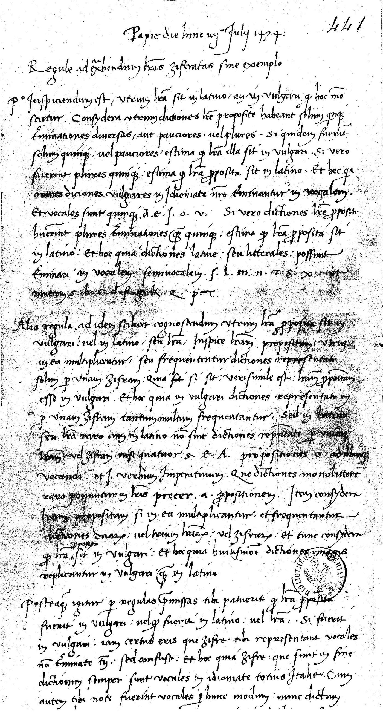
The Church's cryptographic operation was not incidental. It was professional, sustained, and at the leading edge of its era.
The driver was diplomatic. Popes needed secure communication with their nuncios, the permanent papal representatives at the major European courts, and they employed cipher secretaries whose designs were state-of-the-art, comparable to those of the Republic of Venice.
The landmark scholarly source is Aloys Meister's 1906 study of secret writing in the service of the papal curia. Meister collected keys from Vatican libraries and archives, including the papers of Giovanni Battista Argenti and his nephew Matteo, the influential papal cipher secretaries of the later sixteenth and early seventeenth centuries. He identified at least twelve types of ciphers using digits, and that covered only a subset of the keys in his appendices. He also documented a high degree of professionalization, with extensive training in both the creation and the cryptanalysis of ciphers.
The Argentis are the central figures. Giovanni Battista served Sixtus V and Gregory XIV; his nephews Matteo and Marcello succeeded him; the family held the post until 1605. Antonio Elio, who trained Giovanni Battista, was himself elevated to Bishop of Pola, then Vicar of St. Peter's, and finally Patriarch of Jerusalem. That is a cryptographer's career path, and it says something about how the institution valued the work.
The technical substance was serious. The Argenti nomenclators are described as the most sophisticated of the Renaissance, coupling a substitution alphabet reported at 391 symbols with code groups, nulls, and deliberate traps. A nomenclator combines several simpler systems into one composite scheme. Homophonic substitution, multiple symbols per plaintext letter, flattens the frequency distribution that would otherwise betray the message. After his dismissal in 1605, Matteo compiled a roughly 135-page manual summarizing the best of Renaissance practice, and he understood cryptanalysis as well as design.
And they were broken. In one recorded episode, the papal side complained to the pope that the French had solved a Vatican nomenclator, and accused them of using black magic to do it. The French cryptanalyst was François Viète. The pope's own cryptanalyst was Argenti, who knew exactly how good Viète was.
Modern work continues. A 2020 study in Cryptologia reports research in the Vatican archives across 2014 and 2015, where the Prefect directed the team to a structured index containing folders of encrypted letters from the French, Spanish, and Portuguese sections of the Secretariat of State. Alvarez has described the nineteenth century, when after a long period of inertia Vatican cipher clerks slowly adopted newer polyalphabetic techniques.
Three points.
The Church had real crypto doctrine. Homophones, nulls, code groups, and deliberate traps are not naive constructions. The traps in particular are notable: material designed to mislead a cryptanalyst rather than merely conceal from him.
Accusing the attacker of magic is a failure mode. When the pope's correspondents attributed Viète's success to black magic, they were doing what defenders still do: treating a successful attack as impossible rather than as evidence the design was weaker than believed. Argenti, the professional, knew better.
Institutional inertia is a cryptographic risk. A “long period of inertia” before adopting polyalphabetic ciphers describes an organization running deprecated cryptography for decades because nothing had visibly broken. Same pathology as the litterae formatae.
20.The abbot who named steganography
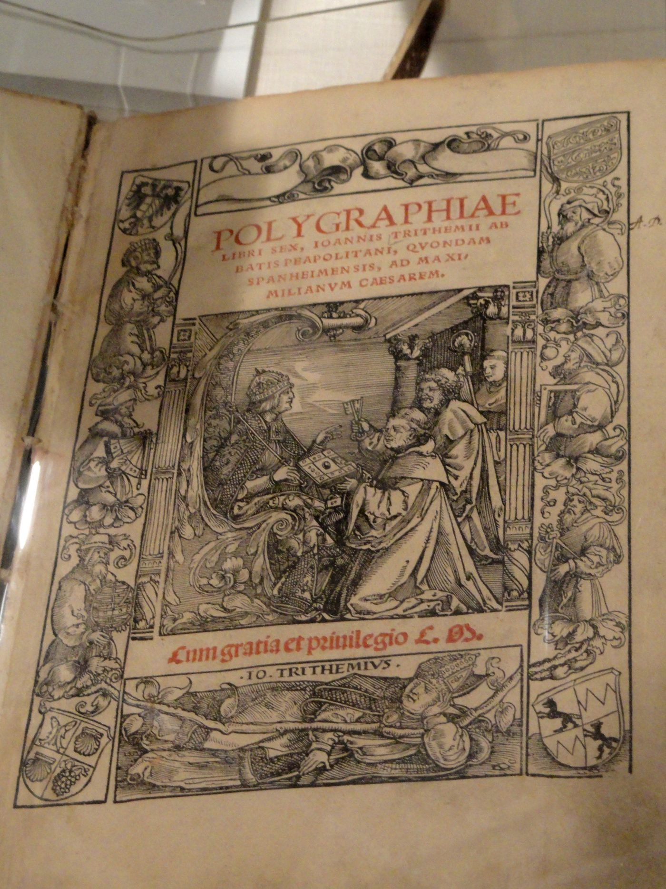
Johannes Trithemius (1462–1516) was a German Benedictine abbot, historian, and one of the leading intellectuals of his day.
His Polygraphiae libri sex was composed around 1508 and published at Basel in 1518, two years after his death. It is credited as the first printed book on cryptography. Its core was the tabula recta, a 26×26 grid in which each row is the alphabet shifted one position left of the row above. Encrypting each successive plaintext letter from a successive row produces the first known polyalphabetic method. The significance is structural: the cipher al-Kindi had dismantled in Baghdad around 850 was a single substitution alphabet vulnerable to frequency counting. The tabula recta gives each position its own alphabet, defeating that attack by design. The table became the standard reference tool for later polyalphabetic systems, including the Vigenère.
Polygraphia also contained the Ave Maria cipher: a system replacing each plaintext letter with a word drawn from Latin prayers, so the output read to any casual observer as a devotional poem. Trithemius supplied nearly a hundred pages of correspondence tables between plaintext letters and pious phrases.
Stop on that. A Benedictine abbot built a cipher whose ciphertext is indistinguishable from prayer. The encryption and the camouflage operate simultaneously. The message is both encrypted and hidden inside a carrier that is not merely innocuous but positively pious in the observer's own value system. It is the Maria Kannon principle, executed as a formal system with lookup tables, in Europe, three hundred years earlier.
Then there is Steganographia, written around 1499, circulated in manuscript, published at Frankfurt in 1606. Trithemius coined the word “steganography.” The book presents itself as a treatise on transmitting messages by summoning spirits, complete with magical language, rituals, and invocations.
It was placed on the Index Librorum Prohibitorum in 1609 and remained there until 1900. Trithemius was accused of practising black magic and the suspicion dogged his reputation for centuries.
The magic was the cover. By 1606 the first two volumes had been shown to be about steganography and cryptography. The third and most arcane-looking volume resisted decipherment until 1998, when Jim Reeds, a mathematician at AT&T, cracked the underlying cipher. Consecutive columns of the tables generate passages that read as innocent Latin prayers.
Trithemius hid a book about hiding messages inside a book that appeared to be about summoning spirits. The steganography was recursive.
It also failed on its own terms, and the failure is the lesson. The purpose of a cover is to avoid attracting attention. Trithemius's cover attracted three centuries of exactly the wrong attention, got him branded a demonologist, and put the work on a banned list. A cover object drawn from a category the adversary finds alarming is worse than no cover at all. He chose occultism in an era when the Church was actively hunting occultists. The Church could not distinguish cryptography from demonology, and so it banned its own abbot's foundational work on secret writing for 291 years.
21.Two things that are not ciphers
Since this section is about codes, two corrections belong here, because both circulate widely and both are wrong.
Cistercian numerals. Frequently presented as a secret Catholic code, including under that headline by the National Catholic Register. The system is real and remarkable: developed by the Cistercian order in the early thirteenth century, just as Arabic numerals were arriving in northwestern Europe, it is more compact than either Arabic or Roman numerals. A single glyph can represent any integer from 1 to 9,999. Digits attach to a vertical stave, position indicating place value, one digit per quadrant. Nine base shapes, mirrored across two axes, generate everything. The idea derives from a two-place system introduced to the order by John of Basingstoke, archdeacon of Leicester, apparently based on a twelfth-century English shorthand. About two dozen manuscripts survive, from England to Italy and Normandy to Sweden.
And the numbers were not used for arithmetic, fractions, or accounting. They were used for years, foliation, divisions of texts, the numbering of notes, lists, indexes and concordances, arguments in Easter tables, and the lines of a musical staff. This is a compact positional notation for indexing. It was used for exactly the sort of dry apparatus nobody needs to hide. Its opacity to modern eyes is an artifact of obsolescence, not design intent. The nineteenth century called them “ciphers,” and that one word has done a great deal of damage.
The Vatican Secret Archives. The institution now called the Vatican Apostolic Archive was established as a separate entity from the Vatican Library by Paul V in 1612 as the Archivum Secretum Apostolicum Vaticanum. It holds roughly 600 collections across about 85 kilometres of shelving, including a two-story reinforced-concrete bunker and climate-controlled rooms for the most precious material, among it the acts of the Galileo trial.
The word is the problem. Secretum derives from secernere, to separate or set apart. It denoted the pope's private collection, reserved to the pontiff and authorized officials, not concealed material. On 22 October 2019 Francis issued a motu proprio renaming it the Vatican Apostolic Archive, stating that “secretum” had lost its true meaning and, associated with the modern sense of “secret,” had acquired the prejudicial implication of something hidden and reserved to a few, contrary to what the archive always was and intended to be. Leo XIII opened it to qualified scholars of any faith or nationality in 1881. Roughly 1,200 to 1,500 researchers are admitted a year.
The honest version includes the counterpoint: parts genuinely do remain classified in the modern sense. Material dated after 1958, and the private records of church figures after 1922, are actively withheld, and critics argue the restrictions impede scholarship.
A naming decision made in 1612 created four centuries of unintended threat perception. The actual access-control posture was reasonable and reasonably transparent. The label implied something else entirely, and the label is what the public responded to. Anyone who has watched an internal system called “shadow” or “black” acquire a reputation it did not earn will recognize the failure. The remedy was to rename the system, and it took 407 years.
Part VIMeeting in Secret
22.Sentries on the hilltops
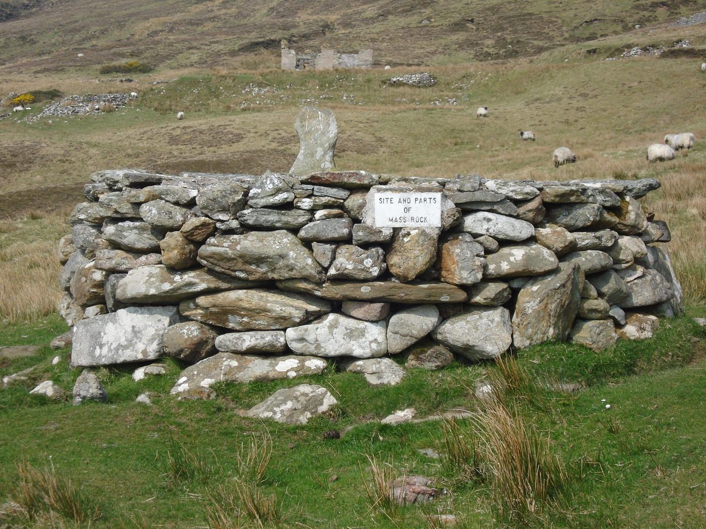
Under the Irish penal laws, roughly the 1690s through the 1750s with precedents going back to Cromwell, Catholic worship was suppressed. Bishops were banished, priests required to register, and priest hunters employed to find those who did not.
The response was to abandon fixed infrastructure entirely.
Mass was celebrated on natural rock outcrops and earth-fast boulders serving as altars, sited in remote hills, woodland, and bogland. The priest moved between communities in disguise. Word of a gathering spread quietly through trusted people. Families walked miles before dawn. And sentries were posted on the surrounding high ground to watch for soldiers and priest hunters.
Three things stand out.
There was no asset to seize. You cannot confiscate a rock, and destroying one accomplishes nothing, because there are hundreds. The community traded permanence and convenience for the elimination of a high-value static target. Ephemeral infrastructure, arrived at by necessity.
Detection was built into the liturgy. The posted sentry is a monitoring control with a defined alerting path, staffed as a standing part of the gathering rather than an afterthought.
They left a trail anyway. The Irish place names preserve the entire network: Carraig an Aifrinn, Mass rock. Clais an Aifrinn, Mass ravine. Faill an Aifrinn, Mass cliff. Gleann an Aifrinn, Mass glen. A community that scattered its worship across hundreds of unmarked sites still named them, and the names entered the permanent record. Operational security that defeats a contemporary adversary can still leave a durable trace. Metadata outlives the operation.
Alongside this ran the hedge schools, clandestine classes taught outdoors behind hedges or in secluded barns, often by fugitive priests, because the same laws that banned the Mass also barred Catholic education. Again: the real target was never the weekly gathering. It was the transmission to the children.
23.The device redesigned for concealment
The same penal laws forbade Catholic devotional objects, and that produced something a hardware engineer will appreciate.
The Paidrín Beag, the Little Rosary or Irish penal rosary, is a single-decade rosary: ten beads, one Pater bead, a finger ring often resembling ancient Celtic ring money, and a distinctive penal crucifix. The crucifix is long and thin specifically so it can be concealed up a sleeve. In use, the crucifix is hidden in the sleeve or palm while the ring goes over the thumb for the first decade; the ring moves to the next finger for the next decade, and so on until all five are complete.
The penal crucifix carries a compressed symbol set, the instruments of the Passion in miniature: a hammer for the nails, a halo for the crown of thorns, a jug for the Last Supper, cords for the scourging, the spear, the three nails, marks along the side of the corpus indicating a ladder (both the ladder of the crucifixion and a metaphor for ascent), the five wounds, and INRI.
Set this beside the sign of the cross and you have the fundamental trade of this entire article. The penal rosary is an artifact: seizable, evidentiary, and possession of it was itself the offence. The gesture is not.
24.The man who built the hiding places
England under Elizabeth I and James I was a genuinely adversarial environment, and it produced the most sophisticated physical-security work in this history.
It was high treason, punishable by death, to be a Catholic priest in England. Sheltering one was itself a capital offence. Margaret Clitherow was pressed to death in 1586 for refusing to plead to a charge of harbouring two priests at York.
Against that, the recusant community produced a specialist. Nicholas Owen was the son of an Oxford carpenter, apprenticed to a joiner, a very short man and later physically disabled. He joined the Jesuits as a lay brother and spent the better part of two decades building hides across the Midlands and beyond.
His discipline reads like an operations manual:
- He worked alone, at night, by candlelight.
- He used a pseudonym, “Little John.” Few knew his real identity.
- He built into fireplaces, walls, attics, staircases, under floors and behind wainscoting. He used false chimney flues. At Baddesley Clinton he converted a sewer.
- Larger hides took the form of a small apartment or chapel where Mass could be said and vestments stored, so a priest could retreat there in an emergency.
- Crucially: other building alterations were sometimes carried out at the same time, so the construction work itself would not signal what was happening. Cover traffic. The hide built inside a larger volume of ordinary noise.
- Hides were provisioned with food, drink, and basic sanitation, because a priest might have to stay still and silent for days. The control was designed against the duration of the search, not merely its occurrence.
- And he never told anyone where they were. He was architect and builder both, and the information lived in one place only.
That one place was a human being. After the Gunpowder Plot, Owen was captured — taken, with awful aptness, in one of his own hides — and tortured to death on the rack in the Tower of London in 1606. He did not give up the names of the Jesuits or the locations of the hides.
He was right about the design. Many of his hides went undiscovered for centuries.
I find Owen hard to write about dispassionately, because the engineering and the cost are the same fact. He understood that he was a single point of failure, and he hardened himself rather than distributing the information. It worked. The network held. And it could only work because the custodian had decided, in advance, what he would do when they came for him. That is not a model that transfers to systems staffed by people who have not made that choice.
His counterpart in the north, the Jesuit Richard Holtby, was never caught and died peacefully in 1640.
Part VIIKeeping the Data Alive
25.Diocletian attacks the archive
In February 303, Diocletian's first edict ordered churches demolished, and scriptures and liturgical books surrendered and burned. In North Africa the enforcement was severe; officials demanded that clergy hand over their books, often under torture.
Christians responded in three ways, and all three are recognizable.
Some refused. Felix, bishop of Thibiuca, was arrested on the very day the decree was posted in his city for refusing to surrender any books, and could not be broken by close confinement. Secundus of Tigisis, senior bishop of Numidia, answered the search party with the phrase that named the era: he was a Christian and a bishop, not a traditor, not one who hands over.
Some ran a deception operation, and it worked. Mensurius, bishop of Carthage, removed the genuine scriptures to his own house and left a quantity of heretical writings in their place. The persecutors seized these and asked for nothing more. When the trick was later reported, the proconsul declined to search the bishop's private house.
That is textbook decoy design, and the choice of decoy is the elegant part. Mensurius handed the persecutors material he was perfectly happy to see burned. Full apparent value to the attacker, negative value to the defender. The seizure closed the search, which was the whole objective. The load-bearing element was the proconsul's refusal to reopen it, and that was outside Mensurius's control.
And some complied. Those who surrendered the books were branded traditores, a term that expanded to cover those who gave up sacred vessels and, worst of all, those who betrayed fellow believers.
26.Why the edict failed
The critical observation is what the church did not do. It did not centralize, encrypt, or restrict its scriptures. It copied them relentlessly and dispersed them everywhere, in a preferred format — the codex — that was cheap, portable, and easily concealed on a person.
Diocletian's edict was a denial-of-availability attack against a massively replicated distributed dataset, and it failed for the reason such attacks generally fail: there were more copies than the adversary could reach. Every seizure at Cirta or Carthage was a local event against a global corpus.
The trade is stark and worth stating plainly. The church accepted near-total loss of confidentiality on its core data in exchange for extreme durability. Anyone could read the Gospels. No one could delete them. Given an adversary who wanted the texts destroyed rather than exfiltrated, that was the correct allocation of effort, and it is the single most consequential security decision in this entire history.
27.Build the reference copy first
Armenia offers the constructive version of the same insight.
Armenia adopted Christianity as a state religion in 301, traditionally the first nation to do so, under Tiridates and through Gregory the Illuminator. But the conversion was top-down. The king converted and commanded, with mass baptisms, and for roughly a century the liturgy continued in Greek.
The fix was a new writing system. Around 405, Mesrop Mashtots, working with Catholicos Sahak Partev and with royal support, produced an alphabet of 36 letters designed for the phonetics of Armenian, because the Greek, Syriac, and Persian scripts then in inconsistent use were inadequate for translating scripture. The goal was explicitly both linguistic and spiritual: give the people the text in their own tongue. The Bible translation that followed is known as the Queen of Translations. The script's original intention was to spread and entrench Christianity, and it did.
And then the sentence that matters most: the greatest progress came after the invention of the alphabet and the translation of scripture and liturgy, and the Armenian Church is considered to have provided a structure for the preservation of Armenian identity in the absence of Armenian political independence.
Hold that. We are coming back to it in Part VIII, because it is the exact control case for the worst failure in this article.
28.Samizdat: the same architecture, industrialized
The twentieth century rebuilt Diocletian's problem with typewriters.
The Soviet state held an information monopoly. Religious writing could only reach the public through channels the state controlled. Against that, believers of every Christian confession, especially from the 1960s onward, turned to samizdat, self-publishing: the clandestine reproduction and circulation of banned material.
The methods were deliberately primitive. Typewriting onto carbon paper. Manual copying by hand. Microfilm. Documents passed hand to hand in small editions to keep exposure low. No printing plant to raid, no press to seize, nothing requiring a supply chain the state could interdict.
The propagation rule is the part that matters. Copies were made a few at a time, and whoever received a copy was expected to make more.
That is peer-to-peer replication with an obligation to seed. There is no central node whose seizure stops distribution, because every recipient is also a distributor. It is the architecture that defeated Diocletian, rebuilt from carbon paper.
The operators also understood compartmentalization explicitly. The Adventist samizdat operation in Lvov, organized by pastor Nikolay Zhukalyuk in 1967, was structured as three separate, independent groups that did not know of each other. A cell structure, adopted for exactly the reason cell structures exist.
It was not enough. In November 1973 Zhukalyuk and Liya Polishchuk, who coordinated the largest group, were arrested. Searches followed at the homes of Adventist leaders across the country, and large quantities of literature were confiscated. Their trial ran seven months.
The lesson is not that compartmentalization failed. It is that compartmentalization bounds the blast radius; it does not prevent the incident. A security service with national reach and a single foothold can run parallel operations against multiple cells. Cell structure buys survivability, not immunity, and anyone who sells it as immunity is lying.
Then there is the human layer, which in this history is always the last and strongest control.
In 1974 the KGB arrested Nijolė Sadûnaitė for typing carbon copies of the underground Chronicle of the Catholic Church in Lithuania. She was interrogated, tortured, and convicted in a closed trial: three years in a strict-regime labour camp, followed by three years of Siberian exile.
She never gave up the names of her fellow dissidents.
Her account of those years was smuggled out to the West and published. The title translates as Radiance in the Gulag.
Nicholas Owen on the rack in 1606 and Nijolė Sadûnaitė in a KGB interrogation room in 1974 are separated by three hundred and sixty-eight years, two languages, and two entirely different technological worlds. They are doing precisely the same thing, for precisely the same reason, with precisely the same asset, which is not a document or a building but the location of other people.
Part VIIIWhat Nearly Killed Them Was Not Persecution
Here is the finding that changed how I think about my own work.
In two separate cases, Christian communities survived enormous external pressure and were then nearly destroyed by something else. In both cases the fatal problem was integrity, not secrecy.
29.When the church could not agree who to trust again
When the Diocletianic persecution ended, the North African church faced a question it could not answer: what is the standing of a leader who complied under duress?
The dispute crystallized around ordination. One of the men who consecrated Caecilian as bishop of Carthage, Felix of Aptunga, was accused of having been a traditor. An assembly at Cirta around 305 demanded an inquiry into the conduct of bishops during the persecution. Mensurius was attacked for the decoy stratagem. Seventy Numidian bishops met at Carthage under the influence of Donatus and elected a rival bishop.
The Donatist position was that a sacrament's validity depended on the moral integrity of the minister. Ordinations and baptisms performed by tainted clergy were void. They rebaptized those baptized in the rival communion, and they challenged the validity of the entire episcopal line descending from Felix of Aptunga.
The result was two parallel lines of succession, each convinced it was the true church, contesting each other's buildings, martyrs, and legitimacy, and it lasted until the Arab conquest.
This is certificate chain repudiation after a suspected root compromise.
The question is exactly the modern one: if a signing authority may have been compromised at time T, is everything it issued after T invalid? And are the credentials issued by those credentials also invalid, recursively, forever?
The Donatists answered yes. The answer was rigorous, internally consistent, and unfalsifiable, and it fragmented the North African church for three centuries, because it left no procedure by which trust could ever be rebuilt. The catholic party answered no, locating validity in the office rather than the officeholder, which is functionally a decision to root trust institutionally so that individual compromise does not cascade. That preserved continuity at the price of admitting that some genuinely compromised credentials would remain valid.
Neither answer is free. But the maximalist position has been run at scale, and the result is on the record.
30.The slow corruption of a perfect covert channel
Which brings us back to Japan, and to the most sobering case in this history.
By any confidentiality measure, the Hidden Christians succeeded beyond reason. They evaded an active, instrumented, population-wide detection program for two hundred and fifty years. At least seven generations kept the faith, taught it to their children in secret, and lived outwardly ordinary lives with the sword permanently over them.
On 17 March 1865, a small group walked into the newly consecrated Ōura Church in Nagasaki and asked the French priest, Fr. Petitjean, whether they might see the statue of Santa Maria.
But what came up out of the ground was not quite what had gone down.
Across those centuries the tradition had been transmitted orally, with no Eucharist, no confession, no ordination. The record shows measurable doctrinal drift: the Trinity conflated with Buddhist-influenced triads, the Maria Kannon figures venerated in ways that departed from Nicene formulation. Scholarly judgments range from treating the result as an invalid imitation to framing it neutrally as an indigenized hybrid tradition. The 1865 rediscovery was followed by fresh persecution: some 3,300 hidden Christians at Urakami were arrested, forced through apostasy rituals, and exiled to Tsushima, Hokkaidō, and the San'in region, where cold, hunger, and disease killed many.
Why did the drift happen? The mechanism is specifiable, and this is the most important paragraph in the article.
They had no authoritative reference copy, no scripture. They had no authenticating authority, no clergy, no functioning succession. They had no error-correction channel, no contact with the wider church for a quarter of a millennium. The transmission medium was oral, which is lossy by nature. And the cover object exerted semantic pressure on the payload: because the carrier was a genuine Buddhist devotional form rather than an inert wrapper, meaning bled from the carrier into the message across seven generations.
That last point is the one I cannot stop thinking about. The covert channel was not neutral with respect to what it carried. Given enough iterations, the disguise became partly constitutive of the thing disguised.
Now set Japan next to Armenia and the comparison does the work of a hundred pages of theory.
Both faced civilizational pressure: centuries without political independence, repeated conquest, eventually genocide. Armenia had a purpose-built script, a canonical translation, a continuous clergy, and fifty thousand stones repeating the same symbol across the landscape. Japan had none of those. Armenia's identity survived. Japan's drifted.
That is not luck. It is the difference between a system with an authoritative reference and error correction, and a system running for 250 years on institutional memory alone.
Nothing in modern practice runs that long, so the analogy is imperfect. But anyone maintaining a system whose documentation is gone, whose original architects have left, and whose canonical reference no longer exists, while the thing keeps running on memory, is conducting the same experiment on a shorter clock. Uncorrected drift in long-duration transmission without an authoritative reference is not a risk to be managed. It is a certainty. The only variable is the rate.
Part IXTaking the Cross
Christians have also fought wars in defense of the faith. The history is real, it is varied, and the Church's own current doctrine treats a good deal of it as wrong. All three facts belong here.
31.Avarayr, 451: the defeat that won
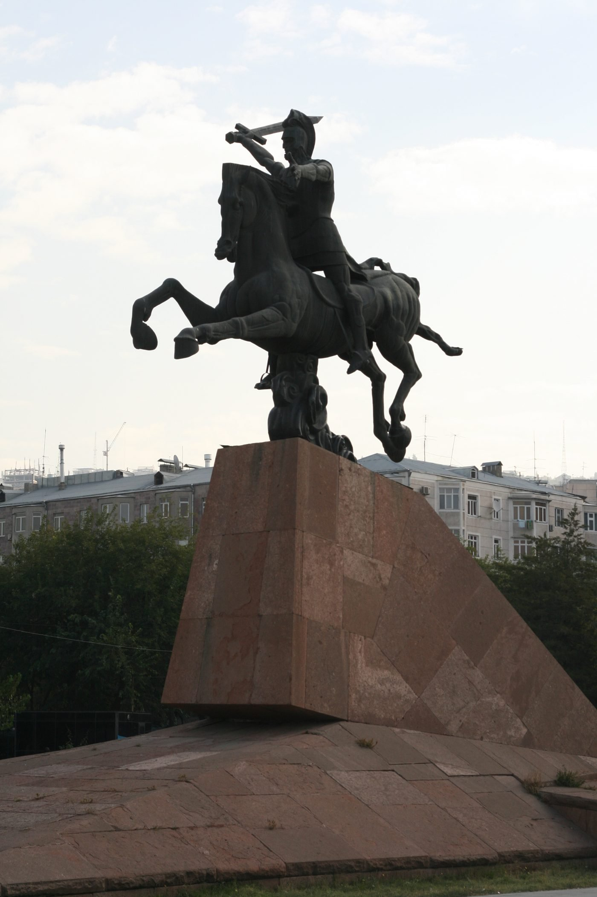
The Sasanian shah Yazdegerd II moved to compel Armenian nobles to convert to Zoroastrianism. When news of the compulsion reached Armenia a mass revolt broke out, and the nobility, led by the sparapet Vardan Mamikonian, joined it.
On 26 May 451, on the Avarayr Plain in Vaspurakan, a Christian Armenian army met a Sasanian force including the Immortals and war elephants. Vardan's army was defeated. The supporters of Vasak of Syunik deserted during the battle, and Vardan died with nine generals and much of the Armenian nobility. Casualty figures give roughly 3,544 Sasanian dead against 1,036 Armenian: heavier losses for the victors.
Yazdegerd, alarmed by the Persian losses, withdrew his troops and imprisoned Vasak. Armenian resistance continued for decades under Vardan's nephew Vahan Mamikonian, and in 484 the Treaty of Nvarsak secured recognition of Armenian religious rights and autonomy, with a general amnesty and permission to build new churches.
It is described as one of the first battles fought in defense of the Christian faith, a pyrrhic victory for Persia and a moral victory for the Armenians. Vardan is a national hero, venerated as a saint and martyr, and the events are recorded by the Armenian historians Yeghishe and Ghazar Parpetsi.
Avarayr is a cost-imposition defense. The defenders lost the engagement and won the objective, because they made continued suppression more expensive than it was worth. Thirty-three years of subsequent resistance converted a battlefield defeat into a treaty. Anyone who thinks about deterrence rather than prevention recognizes this: the goal was never to win the fight but to change the adversary's cost calculus permanently. It took three decades.
32.The pivot: when the hidden sign became a battle standard
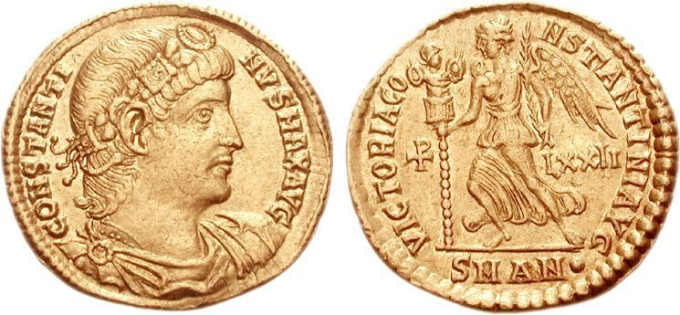
On the evening of 27 October 312, before the Battle of the Milvian Bridge, Constantine reported a vision leading him to fight under the protection of the Christian God.
The two contemporary accounts differ, and the difference matters. Lactantius, writing around 315 and closer to the event, describes a dream in which Constantine was commanded to mark the heavenly sign on his soldiers' shields, and describes that sign as a staurogram, a cross with its upper end rounded in a P-like fashion, rather than the Chi-Rho. Eusebius, in the Life of Constantine, describes a sign appearing above the sun in daylight, followed by a dream, and explicitly identifies the Chi-Rho. Eusebius describes the resulting standard: a long gold-overlaid spear forming a cross by means of a transverse bar, topped with a wreath of gold and precious stones. Historians hold the two accounts can hardly be reconciled, though popular memory has merged them.
The labarum was the resulting military standard bearing the Chi-Rho, used in Constantine's later wars against Licinius. Its first imperial appearance is on a silver coin of about 317, proving he used the sign by then, though not prominently.
And here is the detail that makes this the hinge of the whole story: both Lactantius and Eusebius agree the sign was not widely understandable as denoting Christ, although among Christians it was already in use in the catacombs to mark and decorate tombs.
At the Milvian Bridge, a token legible to insiders and opaque to outsiders was carried at the head of an imperial army. That is the moment the in-group marker became state infrastructure, and for a brief period it was both at once: an ambiguous sign on the shields of soldiers, meaningful to the Christians among them and merely decorative to everyone else. Dual-use, at scale, in public.
Within a generation the ambiguity was gone, and so was the need for it. The anchor gave way to the cross. This is what it looks like when a covert channel is promoted to a public protocol: the property that made it safe, its ambiguity, is the first thing discarded.
33.The cross as uniform
The crusading movement is generally dated from the Council of Clermont in 1095, where Urban II proclaimed an armed expedition in support of Eastern Christians under Muslim rule, framed as a penitential pilgrimage. Alexios I Komnenos had sought aid against Turkoman incursions; Urban saw an opportunity to reassert papal authority and offered spiritual rewards. Jonathan Riley-Smith characterizes it as a revolutionary appeal linking warfare to pilgrimage. The theological scaffolding combined classical just war theory, biblical precedent, and Augustine on legitimate violence.
The mechanism is the point here. Participants pledged themselves by taking the cross: attaching a cloth cross to their outer garments while pronouncing a vow aloud. The two acts together made the votary a cruce signatus, “one signed with the cross.” Failure to fulfil the vow could bring excommunication.
Two scholarly cautions belong in any responsible treatment. Edward Peters notes that contemporaries called the First Crusade a journey and its participants pilgrims; many called themselves peregrini, and the name and much of the apparatus, including the formal bestowing of the cross and crusader privileges, developed later, some of it nearly a century after the event. And reactions in the West were more ambivalent than the popular picture suggests, even among some who took the cross, reflecting the Church's long-standing ambiguity about violence. Motivations were mixed: indulgences, material gain, feudal obligation, kinship, and social pressure alongside piety.
The cloth cross is a wearable credential binding an individual to a vow with an enforcement mechanism attached. It converts a religious symbol into a uniform, an identifier, and a contract marker simultaneously. That is a profound repurposing of the same two strokes that a third-century Christian would only display disguised as an anchor.
34.Viva Cristo Rey
The modern case is documented well enough that no romanticism is required.
Mexico's 1917 Constitution contained anticlerical provisions; President Plutarco Elías Calles enforced them aggressively. The Calles Law, issued 14 June 1926 and effective 31 July, required priests to register with civil authorities, capped clergy numbers, banned public worship outside registered churches, outlawed religious processions, forbade priests to wear clerical dress in public or comment on politics, criminalized taking religious vows, deported foreign clergy, and seized all ecclesiastical property, with sanctions for officials who failed to enforce it.
The Mexican bishops responded by suspending public worship nationwide effective 1 August 1926, after consultation with the Holy See, in a country over 90 percent Catholic. Three bishops went into hiding; the rest went into exile. For the first time in more than four hundred years, no priest in Mexico offered Mass.
Peaceful resistance came first: boycotts, petitions, publicity, aid to those who lost their livelihoods. When it failed, armed rebellion followed, formally from 1 January 1927 in northern Jalisco, concentrated in rural west-central Mexico, fought largely as guerrilla warfare. The fighters were the Cristeros, from their battle cry “¡Viva Cristo Rey!” They went into battle wearing scapulars and singing hymns, believing that those who died would be martyrs.
In November 1927 Father Miguel Agustín Pro was summarily executed on false charges. He extended his arms in the form of a cross and cried “Viva Cristo Rey” as he was shot.
Public worship resumed on 28 June 1929 at the Basilica of Our Lady of Guadalupe. But Cristeros who did not relocate were taken prisoner and executed after the agreement. The anticlerical provisions were not substantially relaxed until the 1980s.
Note the sequence, because it maps almost point for point onto the doctrine in the next section: peaceful means first, exhausted; then hierarchy-level withdrawal of the service rather than compliance; then armed resistance; then a negotiated settlement followed by the elimination of those who had resisted.
And note Fr. Pro's final act. With every object confiscated and every institution closed, he used his own body as the symbol. It is the same reduction as the sign of the cross, at the last possible moment.
35.What the Church now teaches
Any honest treatment has to state the current doctrine, because it constrains everything above.
Catechism §2309 sets out the conditions for legitimate defense by military force, all of which must hold simultaneously:
The Catechism calls these the traditional elements of just war doctrine and assigns evaluation to the prudential judgment of those responsible for the common good. §2308 obliges all citizens and governments to work for the avoidance of war. Gaudium et Spes §79, quoted in the Catechism, permits legitimate defense once all peace efforts have failed, and adds the distinction that undertaking military action for the just defense of a people is one thing and seeking the subjugation of other nations is another. §2312 holds that the moral law remains permanently valid during armed conflict. The conditions are expressly limited to defensive action after other options are exhausted.
And then the reckoning. On the Day of Pardon in Lent 2000, in St Peter's Basilica, John Paul II asked pardon for the divisions among Christians, for the use of violence that some have committed in the service of truth, and for attitudes of mistrust and hostility toward followers of other religions. The homily named no specific groups, but “violence in the service of truth” is widely understood to refer to the treatment of heretics under the Inquisition, the Crusades, and forced conversions.
I am not going to adjudicate Clermont here. What I will say is that the resulting position is more credible than either apologetics or condemnation: an institution that has articulated a demanding standard and has publicly conceded that it failed to meet it.
Part XWas Any of This Even Allowed?
A Christian writing about Christian operational security has to confront something uncomfortable: the church never agreed that any of it was legitimate.
The text at issue is Matthew 10:23: when they persecute you in one town, flee to the next.
Tertullian, in On Flight in Persecution, argued that this applied only to the apostles' original mission and did not license flight in his own day. His reasoning is uncompromising:
If persecution comes from God, being told to evade it by the one who sent it makes no sense. Refusal of martyrdom is denial. A man's own safety testifies that he fell while getting out of persecution's way. Whoever flees is the one who fears, and whoever fears is the one who has not loved. He extends the argument even to purchased safety, citing a man named Rutilius who fled repeatedly and bought his security with money, and was seized, tortured, and burned anyway, which Tertullian took as a punishment for the fleeing.
He classed flight as a weaker form of apostasy.
That is a direct assault on everything in this article. In Tertullian's framing, Owen's hides, Mensurius's substituted books, the anchor, the code words, the Maria Kannon, the penal rosary — all of it is a species of denial. The position deserves to be stated at full strength rather than waved away. Tertullian himself neither fled nor was martyred, which complicates rather than settles it.
Clement of Alexandria, Origen, and Cyprian read the verse the other way, as still binding and as justifying withdrawal. All three escaped persecution by departing. Cyprian later accepted martyrdom; Origen suffered under torture. None denied that confession and martyrdom were central.
Cyprian is the case that speaks most directly to anyone who has weighed their own continuity against their own courage. He withdrew into hiding during the Decian persecution and was attacked as a bad shepherd for it. He governed Carthage from concealment, by letter, through the entire crisis. The scholarly reading is that his withdrawal and his eventual martyrdom flow from one consistent conception of a bishop's duty under changing circumstances.
The argument in his favour is uncomfortably practical: a leader's survival is an asset to the community, not merely to himself. A Cyprian martyred in 250 does not write the letters that hold the Carthaginian church together through the crisis that followed.
Then there is the sharpest version of the question, which Elizabethan England forced: may a Christian deceive an interrogator?
The Catholic moral tradition held that lying, speaking falsehood with intent to deceive, is intrinsically evil and never permissible. But it permitted an ambiguous answer, in the hope the questioner would take it wrongly. This is equivocation, or mental reservation. Henry Garnet and Robert Southwell, both Jesuits, wrote treatises on it; Garnet's was published secretly around 1595.
The doctrine carried real conditions. It required a just cause, such as protecting innocents from tyrannical interrogation. The words had to admit a true interpretation. And it was forbidden in formal oaths, or where the questioner had explicitly demanded no equivocation, which forecloses exactly the situation where deception would be most useful.
The record is emphatic about motive. Southwell and Garnet practised mental reservation under torture not to save themselves, since their deaths were already certain, but to protect other believers. Southwell was accused at trial of having told a witness it was permissible to lie under oath to conceal a priest; he answered that this was not what he said, that an oath requires justice, judgement, and truth — and the rest of his answer is lost, because a judge shouted him down. He was executed in 1595, Garnet in 1606. The prosecutor Edward Coke called the doctrine open and broad lying, and monstrous.
I do not think this one resolves. Operational security requires that you not tell your adversary the truth. Christian ethics forbids lying. Equivocation is the attempt to hold both, and serious people, including serious Christians, have concluded it either succeeds or is sophistry. Pascal took the second view, and the doctrine's reputation has never recovered from its later invocation to cover institutional wrongdoing.
What I will say is this: the men who developed it were tortured to death without betraying anyone. That does not prove the doctrine right. It does establish that they were not using it for their own convenience.
Part XIWhy None of the Old Tools Work Anymore
I want to end in the present, because there is a discontinuity here that should worry anyone who cares about the persecuted church.
Christians in China today face something no earlier generation faced. Persecution under Xi Jinping combines conventional coercion with mass surveillance: extensive CCTV, facial recognition, artificial intelligence, big-data analysis, social-credit scoring. Worshippers at state-approved churches use an app carrying biometric and personal data to enter. Services are recorded, and sermon content analysed and censored. Following the October 2025 raids on Zion Church, at least eighteen pastors and staff were charged with illegal use of information networks. The network itself is named as the offence.
Zion had been banned in 2018 and stripped of its property after its leadership refused to install CCTV cameras inside its own building. That refusal was a security decision, and the right one: they chose to lose the premises rather than accept adversary-controlled instrumentation inside the perimeter. It was also enormously expensive, which is what correct security decisions usually are.
But the detail that stopped me cold comes from an interview with a Christian in contact with an underground house church in Xi'an.
Chinese believers have long avoided words like “church,” “prayer,” and “pastor,” substituting coded language. That is the oldest technique in this article, the direct descendant of Peter writing “Babylon.” And it is no longer sufficient. Two members of that congregation became priority surveillance targets, the account says, because their WeChat chat patterns were flagged.
Not their words. Their patterns.
Understand what that means. The code words worked. Nobody had to break them. The adversary never needed to read the content at all, only to observe who talks to whom, how often, at what hours, in what bursts, and how the graph changes when something happens.
That is the discontinuity, and it invalidates most of eighteen centuries of accumulated practice. Every content-layer control in this article is defeated by an adversary who never reads the content. The acrostic, the anchor, the substituted book, the disguised statue, the veiled place name, the Ave Maria cipher — all of them assume the adversary's power lies in comprehension. A modern surveillance state does not need to comprehend. It observes the shape of the network directly, and the shape is generated by the very act of being a community.
And the countermeasures are largely closed off. Facebook, WhatsApp, Signal, Telegram and the rest are inaccessible. VPN apps are absent from domestic stores, searching for one is itself risky, using one is illegal, and people have been arrested for it. WeChat, through which contact, work, payments, and appointments all flow, is owned by a Chinese company, and the government can see every message and every group.
Trajan's Christians could be visible because nobody was watching the graph. The Hidden Christians could hide a payload inside a real Buddhist altar because nobody was correlating who visited whose house. Those assumptions are gone.
Part XIIWhat They Chose to Protect
If I had to compress eighteen centuries into one observation, it would be this.
The early church chose availability over confidentiality, and it was right.
It did not encrypt the scriptures. It copied them relentlessly, in a cheap portable format, and pushed them everywhere it could reach. Anyone could read the Gospels. That was the point. When Diocletian ordered every copy burned, he was attacking a massively replicated distributed dataset, and he failed for the reason such attacks always fail: there were more copies than he could reach.
They accepted near-total loss of confidentiality on their most important data in exchange for extreme durability. Given an adversary who wanted the texts destroyed rather than stolen, that was the correct trade, and it is the single most consequential security decision in this history.
Everything else follows from that priority. The controls that lasted were the ones that protected transmission: the scribal marks that let you verify a manuscript's lineage, the letters that let a stranger be vouched for, the underground school at Derinkuyu, the hedge school behind the Irish hedge, Mesrop's alphabet, the fifty thousand stones, the seven generations of Japanese parents teaching children prayers in a language none of them understood anymore.
Sixteen things I would take from this history into a threat model
- Threat model determines technique. Roman-era Christians correctly assessed a reactive adversary and declined to invest in concealment. Tokugawa-era Christians correctly assessed an instrumented one and invested heavily. Neither would have survived using the other's playbook.
- Availability beats confidentiality when the adversary wants destruction rather than exfiltration.
- Social camouflage outperforms technical obfuscation. The controls with the best survival records worked by occupying a category the adversary already tolerated. Nothing about them looked like security. That was the point.
- Integrity failures did the real damage. Persecution did not break the North African church; the revocation dispute afterward did.
- Cryptographic controls fail at the operator, not the algorithm.
- Compartmentalization bounds damage; it does not prevent it.
- The human is the key store, and this only works when the human has consented in advance.
- Successful operational security still leaves durable artifacts. Mass rocks left their names. The hidden Christians left statues in museums. The samizdat operators left KGB case files.
- Long-duration covert channels are not semantically neutral. Over enough generations, the disguise reshapes what it disguises.
- A symbol's security value is inversely related to its entropy. Low entropy is fatal for a key and ideal for a cover.
- Inculturation runs both directions and is the same mechanism. Maria Kannon, the cross on the lotus, and Gregory's temple policy are one technique under three power relations.
- The cover category must be one the adversary tolerates. Trithemius chose occultism during an occult panic and spent three centuries on the Index.
- Adversaries attack the symbol layer when they cannot reach the people, and the countermeasure that works is remote observation of secondary effects.
- The last available medium is the body.
- Build the reference copy before you need it. Armenia did. Japan could not.
- The modern shift from content to metadata invalidates most of the historical toolkit.
They were not, in the end, trying to keep a secret. They were trying to keep something alive, which is a harder problem and a different one. Secrets only have to survive until they stop mattering. A faith has to arrive intact in a generation that has not been born yet.
The Hidden Christians teach us how nearly that can be done and how much is lost along the way. The Donatists teach us that the thing most likely to destroy a community is not the enemy at the door but the argument about who can still be trusted afterward. Derinkuyu, eighty-five metres down and dark for forty years, teaches us that the most sophisticated refuge ever built by a persecuted church still required someone above ground who remembered the way in.
Djulfa teaches us that when they can no longer reach the people, they come for the stones, and that a shadow on a satellite image can testify when no one is permitted to stand on the ground.
And Nicholas Owen and Nijolė Sadûnaitė, three and a half centuries apart, teach us the thing every security architect eventually learns and would rather not: in the end, past all the design, there is a person who knows where everyone is, and everything depends on what they decide to do about it.
Voices from the record
Six statements from the people who actually lived this, in their own words, spanning eighteen centuries and four continents.
“Conquirendi non sunt.” They are not to be hunted down.
Whoever flees is the one who fears, and whoever fears is the one who has not loved.
A Christian and a bishop — not a traditor. Not one who hands over.
One who strives to climb to the summit ascends by steps or paces, not by leaps.
¡Viva Cristo Rey!
For the use of violence that some have committed in the service of truth…
A Note on Sources and Method
This article is built on two research white papers with full citations, covering roughly 380 sources. Where scholarship is divided I have said so. Three things commonly asserted about this history do not survive scrutiny and are treated accordingly above: routine secret worship in the catacombs, the fish as a covert recognition handshake, and the Sator square as an early Christian cryptogram. Two more are corrected in the text: Cistercian numerals were an indexing notation rather than a code, and the Vatican's “secret” archive is a translation problem rather than a conspiracy.
I have tried throughout to separate what is attested from what is contested from what is folklore, because the analytic value of this history lies entirely in what actually happened.
Malcolm R. Smith writes on operational security, surveillance, and the history of persecuted communities for Savvy Security LLC.